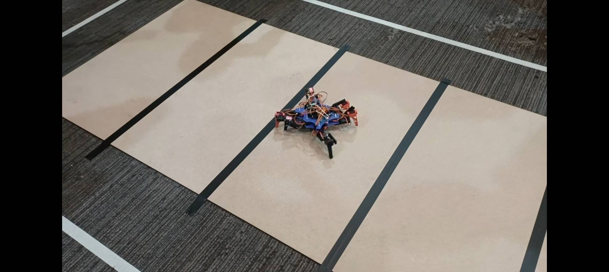
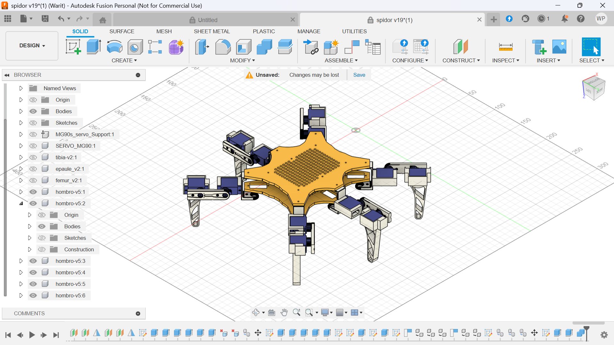
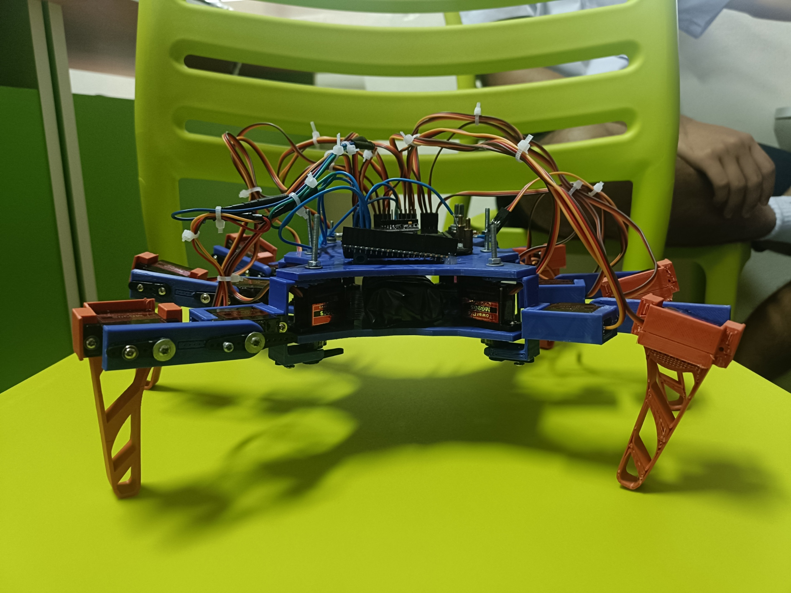

วัตถุประสงค์
พวกเราเลือกใช้หุ่นยนต์ในรูปแบบ Hexapod เพราะสามารถเคลื่อนที่ในพื้นที่ต่างระดับ หรือ สิ่งกีดขวางได้อย่างมีประสิทธิภาพ และพวกเรามีเป้าหมายให้หุ่นยนต์สามารถควบคุมได้ทั้งระบบอัตโนมัติ และระบบคงบคุมด้วยมือ โดยใช้เครื่องมือและวัสดุที่สามารถใช้งานได้ในห้องปฏิบัติการ FABLAB โดยพวกเราได้ใช้ Design Thinking ที่สามารถช่วยให้มีความเป็นระเบียบในการคิดการออกแบบ และตอบโจทย์ต่อความต้องการของปัญหาได้อย่างมีประสิทธิภาพ อุปสรรคที่พวกเราพบเจอ ได้แก่ ข้อจำกัดและอุปสรรค - เครื่องพิมพ์สามมิติขัดข้อง ต้องทำการจูนเครื่องใหม่ - เซอร์โวที่สั่งซื้อมาบางตัวเสียหาย ทำให้ทีมต้องเตรียมเซอร์โวสำรองเพิ่ม - ต้องปรับแบบชิ้นส่วนบางจุดหลายครั้งเพื่อให้เข้ากับเซอร์โวอย่างพอดี
ส่วนประกอบ / วัสดุ
- Raspberry pico
- PCA9685
- Micro Servo Motor MG90S 18x
- PS2 Controller Receiver
- Lm2596 Dc-Dc Step-Down
- Lipo battery 7.4V 1500mah
- VL53L0X Laser ranging distance sensor
- MPU6050